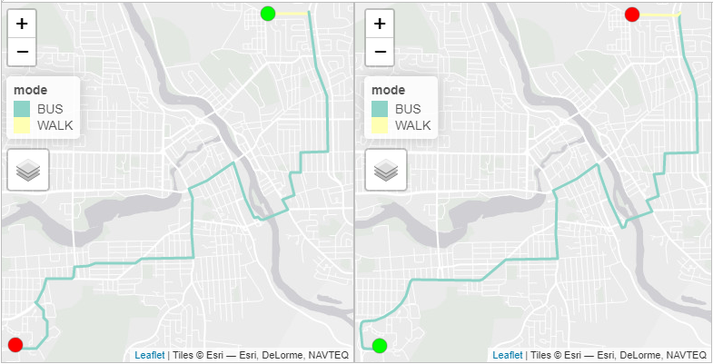
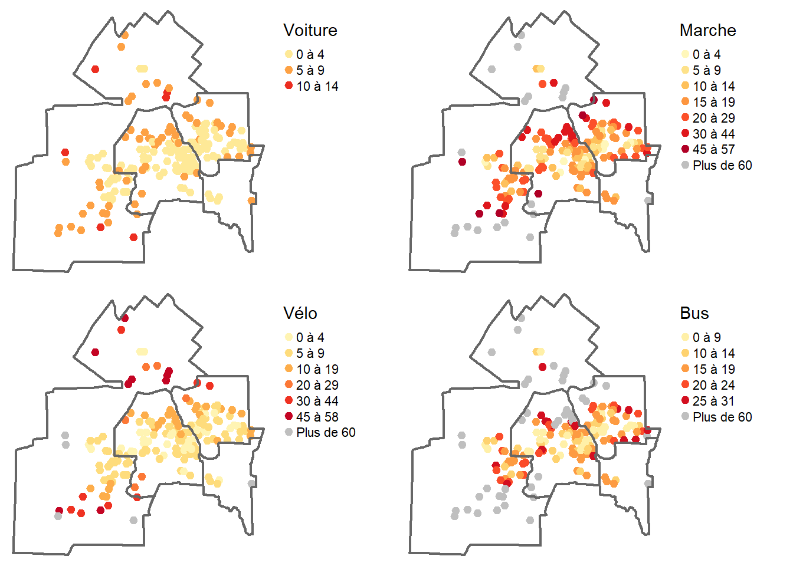

library(osmextract)
## Identification du fichier OSM (format pbf) pour l'Estrie
Estrie = oe_match(place="Estrie", provider = "openstreetmap_fr")
## Téléchargement du fichier OSM (format pbf) pour l'Estrie
oe_download(
file_url = Estrie$url,
file_size = Estrie$file_size,
provider = "openstreetmap_fr",
download_directory = "data/chap05/__TempOSM")5 Mesures d’accessibilité spatiale selon différents modes de transport
Dans ce chapitre, nous voyons comment construire un réseau multimode (voiture, marche, vélo, transport en commun) pour calculer différentes mesures d’accessibilité dans R. Aussi, nous discutons de la notion d’accessibilité à un service, notamment des cinq dimensions identifiées par Penchansky et Thomas (1981), de l’accessibilité réelle versus l’accessibilité potentielle et de l’accessibilité spatiale versus l’accessibilité aspatiale (Luo et Wang 2003).
Liste des packages utilisés dans ce chapitre
- Pour importer et manipuler des fichiers géographiques :
-
sfpour importer et manipuler des données vectorielles. -
terrapour importer et manipuler des données matricielles.
-
- Pour construire des cartes et des graphiques :
-
tmapest certainement le meilleur package pour la cartographie. -
ggplot2pour construire des graphiques.
-
- Pour construire un réseau :
-
osmextractpour extraire des fichiers OpenStreetMap. -
gtfstoolspour valider la structure d’un fichier GTFS. -
R5Rpour calculer des trajets et des matrices origines-destinations selon différents modes de transport.
-
- Pour manipuler les données :
-
dplyrpour calculer des moyennes pondérées.
-
5.1 Notions relatives à l’analyse de réseau
5.1.1 Définition d’un réseau
Un réseau est un ensemble de lignes connectées par des nœuds – voies ferrées, voies routières, canalisations d’eau ou de gaz, fleuves et affluents drainant une région, etc. – reliant un territoire (figure 5.1). Pour un réseau routier, l’information sémantique rattachée tant aux lignes (sens de circulation, vitesse autorisée, rues piétonnières, pistes cyclables, etc.) qu’aux nœuds (types d’intersection, autorisation de virage à gauche, etc.) est utilisée pour modéliser un réseau.
5.1.2 Principaux problèmes résolus en analyse de réseau
L’analyse de réseau permet de résoudre trois principaux problèmes (figure 5.2) :
Trouver le trajet le plus court ou le plus rapide entre deux points, basé sur l’algorithme de Dijkstra (1959).
Trouver la route optimale comprenant plusieurs arrêts (problème du voyageur de commerce).
Définir des zones de desserte autour d’une origine, basé aussi sur l’algorithme de Dijkstra.
À cela s’ajoutent quatre autres problèmes :
Trouver les k services les plus proches à partir d’une origine (figure 5.3, a).
Construire une matrice de distance origines-destinations (figure 5.3, b), dont l’intérêt principal est de permettre par la suite le calcul de n’importe quelle mesure d’accessibilité.
Résoudre le problème de tournées de véhicules dont l’objectif est d’optimiser les tournées d’une flotte de véhicules en fonction des ressources disponibles, de la localisation des clients, des lieux de dépôt de marchandises, etc.
Réaliser un modèle localisation-affectation dont l’objectif est d’optimiser la localisation d’un ou plusieurs nouveaux équipements en fonction de la demande, et ce, en minimisant la distance agrégée entre les points d’offre et de demande. Par exemple, une région ayant 15 hôpitaux desservant deux millions d’habitants souhaiterait ajouter trois autres établissements. En fonction de l’offre existante (hôpitaux pondérés par le nombre de lits), de la distribution spatiale de la population et de la localisation des sites potentiels des trois hôpitaux, il s’agit de choisir ceux qui minimisent la distance entre les points d’offre et de demande.
Ces problèmes peuvent être résolus selon différents modes de transport, à savoir le chemin le plus rapide en véhicule motorisé, à pied, en vélo et en transport en commun (figure 5.4).
5.1.3 Analyse de réseau et entités polygonales
Vous avez compris que les problèmes présentés plus haut sont réalisés à partir d’entités spatiales ponctuelles. Pour estimer le trajet le plus court ou le plus rapide entre un point et un polygone (un parc urbain par exemple), il faut préalablement le convertir en point. Plusieurs solutions sont envisageables (Apparicio et Séguin 2006) :
Calculer le trajet entre le point et le centroïde du parc (figure 5.5, a). Le centroïde est alors rattaché au tronçon de rue le plus proche. Cette solution est peu précise : plus la superficie du polygone est grande, plus l’imprécision augmente.
Si le parc a plusieurs entrées, il suffit de les positionner le long du périmètre et de calculer les trajets à partir de ces points.
Si le parc n’a pas d’entrée, il convient de positionner des points le long du périmètre, espacés d’une distance prédéterminée (figure 5.5, b). Bien qu’elle soit longue à calculer, cette solution est bien plus précise. Par exemple, avec des points espacés de 20 mètres le long du périmètre du parc, l’erreur maximale est de 10 mètres.
Modélisation d’un réseau dans un logiciel SIG (systèmes d’information géographique)
Il est aussi possible de construire un réseau dans un logiciel SIG (QGIS et ArcGIS Pro par exemple). Pour une description détaillée de la construction d’un réseau selon différents modes de transport (voiture, marche, vélo et transport en commun) dans un SIG, consultez l’article d’Apparicio et al. (2017).
5.2 Construction d’un réseau avec R5R
Pour construire un réseau pour différents modes de transport dans R, nous utilisons le package R5R (Pereira et al. 2021). Il existe d’autres packages, notamment opentripplanner (Morgan et al. 2019) qui a été largement utilisé ces dernières années. Étant plus rapide, R5R s’impose actuellement comme la solution la plus efficace pour calculer des trajets à travers un réseau de rues selon différents modes de transport.
Documentation du packageR5R
Nous vous conseillons vivement de lire la documentation de R5R sur le site de CRAN, notamment les nombreuses vignettes présentant des exemples d’analyses avec du code R très bien documenté.
5.2.1 Extraction des données spatiales pour R5R
Pour construire un réseau multimode, R5R a besoin de trois fichiers qui doivent être localisés dans le même dossier (figure 5.6) :
- un fichier pbf (Protocolbuffer Binary Format) pour les données d’OpenStreetMap.
- un ou plusieurs fichiers GTFS (General Transit Feed Specification) pour les flux relatifs aux transports en commun.
- un fichier GeoTIFF d’élévation.
Notez que ce dernier fichier est optionnel. Toutefois, pour calculer des trajets à pied ou à vélo, il est préférable de tenir compte de la pente, surtout dans une ville comme Sherbrooke!

5.2.1.1 Extraction d’un fichier OpenStreetMap
Pour récupérer un fichier OpenStreetMap (OSM, format pbf), nous utilisons deux fonctions du package osmextract (Gilardi et Lovelace 2022) :
-
oe_matchpour repérer le fichier OSM pour la région de l’Estrie. -
oe_downloadpour télécharger le fichier OSM pour la région de l’Estrie.
Le fichier OSM téléchargé plus haut couvre la région de l’Estrie. À notre connaissance, il n’existe pas de solution pour découper un fichier pbf dans R. Par conséquent, nous récupérons les coordonnées minimales et maximales de l’enveloppe d’une zone tampon de 5000 mètres autour de la couche de la ville de Sherbrooke. Puis, pour découper le fichier pbf, nous utilisons l’outil osmconvert64-0.8.8p.exe. Le code ci-dessous renvoie les quatre coordonnées de l’enveloppe.
library(sf)
library(tmap)
## Importation du polygone pour la ville de Sherbrooke avec sf
Sherbrooke <- st_read(dsn = "data/chap05/AutresDonnees/Sherbrooke.shp", quiet=TRUE)
## Création d'une zone tampon de 5 km
zone <- st_buffer(Sherbrooke, dist = 5000)
## Changement de la projection en 4326
zone <- st_transform(zone, 4326)
## Création de l'enveloppe autour de la couche
enveloppe = st_bbox(zone)
## Visualisation des coordonnées minimales et maximales
cat(paste0("Minimum longitude : ", round(enveloppe[1],4),
"\n Minimum latitude : ", round(enveloppe[2],4),
"\n Maximum longitude : ", round(enveloppe[3],4),
"\n Maximum latitude : ", round(enveloppe[4],4)
))Minimum longitude : -72.1537
Minimum latitude : 45.2683
Maximum longitude : -71.7576
Maximum latitude : 45.5554L’application Osmconvert est disponible pour Windows et Linux. Pour découper un fichier avec les coordonnées latitude/longitude minimales et maximales avec Osmconvert, nous écrivons une commande système et l’exécutons avec la fonction system. Pour utiliser le code ci-dessous, vous devez avoir préalablement téléchargé Osmconvert et connaitre son emplacement.
## Préparation des chemins
path_to_osm_convert <- paste0(getwd(),'/data/chap05/__TempOSM/osmconvert64-0.8.8p.exe')
path_to_big_osm <- paste0(getwd(),'/data/chap05/__TempOSM/openstreetmap_fr_estrie-latest.osm.pbf')
path_to_small_osm <- paste0(getwd(),'/data/chap05/__TempOSM/openstreetmap_fr_estrie-latest.osm_01.pbf')
## Écriture de la commande
commande <- paste0('"',path_to_osm_convert, '" "',
path_to_big_osm, '" -b=',paste0(enveloppe[1:4], collapse = ','),
' -o="',path_to_small_osm,'"')Une fois que la commande est écrite, nous l’exécutons.
system(commande)Notez qu’il est possible d’obtenir le même résultat avec l’application Osmosis. Il s’agit d’un outil rédigé en Java et qui dispose de fonctionnalités similaires à celles de Osmconvert. Puisqu’il est rédigé en Java, il peut être utilisé sur davantage de plateformes qu’Osmconvert.
5.2.1.2 Construction d’un fichier GeoTIFF pour l’élévation
Pour créer un fichier GeoTIFF pour l’élévation, nous utilisons les modèles numériques de terrain (MNT) du ministère des Ressources naturelles et des Forêts.
library(terra)
## Couche polygonale sf pour la ville de Sherbrooke
# Shapefile pour les régions du Québec au 1/20000
# https://www.donneesquebec.ca/recherche/dataset/decoupages-administratifs/resource/b368d470-71d6-40a2-8457-e4419de2f9c0
Sherbrooke <- st_read(dsn = "data/chap05/AutresDonnees/Sherbrooke.shp", quiet=TRUE)
Sherbrooke <- st_buffer(Sherbrooke, dist = 5000)
## Feuillets pour les MNT au 1/20000
## Importation du shapefile des feuillets
## (https://www.donneesquebec.ca/recherche/dataset/modeles-numeriques-d-altitude-a-l-echelle-de-1-20-000/resource/2df157af-74cf-4b53-af9d-1d3ccee0d6e1)
Feuillets <- st_read(dsn = "data/chap05/AutresDonnees/Index_MNT20k.shp", quiet=TRUE)
### Nous nous assurons que les deux couches ont la même projection, soit EPSG 4326
Sherbrooke <- st_transform(Sherbrooke, st_crs(Feuillets))
### Sélection des feuillets qui intersectent le polygone de l'Estrie
RequeteSpatiale <- st_intersects(Feuillets, Sherbrooke, sparse = FALSE)
Feuillets$Intersect <- RequeteSpatiale[, 1]
FeuilletsSherbrooke <- subset(Feuillets,Intersect == TRUE)
## Téléchargement des GRIDS
### Création d'un dossier temporaire pour les MNT
dir.create(paste0("data/chap05/AutresDonnees/MNT"))
grids <- FeuilletsSherbrooke$GRID
i = 0
for (e in grids) {
i = i+1
# Téléchargement
Fichier <- substr(e, 88, nchar(e))
Chemin <- "data/chap05/AutresDonnees/MNT"
CheminFichier <- paste0(Chemin, "/", Fichier)
download.file(e, destfile = CheminFichier)
# Décompression du fichier zip
unzip(CheminFichier, exdir = Chemin)
# suppression du zip
unlink(CheminFichier)
}
## Importation des GRIDS avec le package Terra
Fichier1 <- substr(grids, 88, 98)
Fichier2 <- paste0(substr(tolower(Fichier1), 1, 7),
substr(Fichier1, 9, 11))
NomsFichiers <- paste0("data/chap05/AutresDonnees/MNT/",
Fichier1, "/",
Fichier2)
rlist <- list()
for(e in NomsFichiers) {
print(e)
rasterGrid <- terra::rast(e)
rlist[[length(rlist)+1]] <- rasterGrid
}
## Création d'une mosaique avec les GRIDS
rsrc <- terra::sprc(rlist)
MosaicSherbrooke <- mosaic(rsrc)
MosaicSherbrooke
# Pour réduire la taille du fichier d’élévation, nous arrondissons les valeurs au mètre
MosaicSherbrooke <- round(MosaicSherbrooke)
## Exporter en GeoTIFF
terra::writeRaster(MosaicSherbrooke,
"data/chap05/_DataReseau/Elevation.tif",
filetype = "GTiff",
datatype = 'INT2U',
overwrite = TRUE)
## Suppression des GRIDS
dossier <- "data/chap05/AutresDonnees/MNT/"
f <- list.files(dossier, include.dirs = FALSE, full.names = TRUE, recursive = TRUE)
file.remove(f)
d <- list.dirs(dossier)
unlink(d, recursive = TRUE)Le fichier d’élévation ainsi construit est présenté à la figure 5.7.
MosaicSherbrooke <- terra::rast("data/chap05/_DataReseau/Elevation.tif")
terra::plot(MosaicSherbrooke)Package elevatr pour extraire des images d’élévation pour une région donnée
Plus haut, nous avons utilisé des modèles numériques de terrain (MNT) du ministère des Ressources naturelles et des Forêts pour construire un fichier GeoTIFF pour l’élévation pour la ville de Sherbrooke (Québec). Pour d’autres régions du monde, vous pouvez aussi utiliser le package elevatr (Hollister et al. 2023) pour extraire une image d’élévation à partir de l’API OpenTopography.
Pour plus d’information, consultez cette vignette,
5.2.1.3 Extraction et validation d’un fichier GTFS
Le fichier GTFS pour la Société de Transport de Sherbrooke est disponible à l’adresse suivante : https://gtfs.sts.qc.ca:8443/gtfs/client/GTFS_clients.zip. Pour le télécharger, nous utilisons la fonction download.file.
url <- "https://gtfs.sts.qc.ca:8443/gtfs/client/GTFS_clients.zip"
destfile <- "data/chap05/_DataReseau/GTFS_clients.zip"
download.file(url, destfile)Pour s’assurer du bon fonctionnement d’un GTFS dans r5r, il faut préalablement valider la structure du fichier. Dans un premier temps, vous pouvez valider la structure générale de votre GTFS en utilisant l’outil en ligne gtfs-validator proposé par l’organisation MobilityData. Dans un second temps, il convient de s’assurer que les types de lignes utilisés font partie des types standards définis par Google, soit avec l’un des numéros suivants : 0, 1, 2, 3, 4, 5, 6, 7, 11, 12. Si votre GTFS contient des lignes de transport en commun provenant par exemple des types étendus, r5r renverra une erreur.
Nous vous proposons ci-dessous une fonction qui remplace les types problématiques dans un GTFS. Le plus simple est de les remplacer par un type bus (3), ce qui n’affectera pas les trajets estimés.
library(gtfstools)
## Fonction
clean_gtfs_types <- function(gtfs_file, replace_by = 3){
# Lecture du GTFS
seed <- gtfstools::read_gtfs(gtfs_file)
print(unique(seed$routes$route_type))
# Vérification des types de routes
seed$routes$route_type <- ifelse(
seed$routes$route_type %in% c(0:7,11,12),
seed$routes$route_type,
replace_by
)
# Réécriture du fichier GTFS avec la modification
gtfstools::write_gtfs(seed, gtfs_file)
}
## Appel de la fonction
destfile <- "data/chap05/_DataReseau/GTFS_clients.zip"
clean_gtfs_types(destfile)[1] 3Pour ce fichier, le seul type de ligne utilisé est le numéro 3, soit des lignes de bus.
5.2.2 Construction du réseau avec R5R
R5R et JDK Java et allocation de la mémoire
Le package R5R utilise la version 21 de la JDK de Java (Java Development Kit). Vous devez préalablement la télécharger et l’installer sur votre ordinateur. Les deux lignes de code ci-dessous permettent de vérifier si elle est bien installée sur votre ordinateur.
## Vérification que la JDK version 21 est bien installée
rJava::.jinit()
rJava::.jcall("java.lang.System", "S", "getProperty", "java.version")[1] "21.0.3"Il est fortement conseillé d’augmenter la mémoire allouée au processus JAVA, surtout si vous souhaitez calculer des matrices origines-destinations de grande taille. Par exemple, la commande options(java.parameters = "-Xmx2G") permet d’augmenter la mémoire disponible pour JAVA à deux gigaoctets. Si votre ordinateur ne manque pas de mémoire vive (16, 32 ou 64 gigaoctets), n’hésitez pas à augmenter ce paramètre (par exemple, options(java.parameters = "-Xmx8G")).
Nous utilisons la fonction setup_r5 pour construire un réseau multimode à partir des trois fichiers :
Le fichier OSM (
openstreetmap_fr_sherbrooke.pbf).Le fichier GTFS pour la Société de Transport de Sherbrooke (
GTFS_clients.zip).Le fichier d’élévation pour la région de Sherbrooke (
Elevation.tif).
Notez les paramètres suivants pour la fonction setup_r5 :
data_pathpour définir le dossier dans lequel sont présents les trois fichiers.elevation = "TOBLER"pour utiliser la fonction d’impédance de Tobler pour la marche et le vélo qui prend en compte la pente.overwrite = FALSEpour ne pas écraser le réseau s’il est déjà construit. La construction d’un réseau peut être très longue dépendamment de la taille des trois fichiers (OSM, GTFS, élévation). Par conséquent, n’oubliez pas de spécifier cette option si votre réseau a déjà été construit.
La fonction setup_r5 a créé deux nouveaux fichiers (network.dat et network_settings.json) qui sont utilisés par le package r5r pour les analyses de réseau.
## Liste des fichiers dans le dossier
list.files("data/chap05/_DataReseau/")[1] "Elevation.tif"
[2] "GTFS_clients.zip"
[3] "network.dat"
[4] "network_settings.json"
[5] "openstreetmap_fr_sherbrooke.pbf"
[6] "openstreetmap_fr_sherbrooke.pbf.mapdb"
[7] "openstreetmap_fr_sherbrooke.pbf.mapdb.p"5.2.3 Calcul d’itinéraires avec R5R selon le mode de transport
Pour calculer un trajet, nous utilisons la fonction detailed_itineraries dont les paramètres sont décrits dans l’encadré ci-dessous.
Paramètres de la fonction detailed_itineraries
-
r5r_core: le réseau créé avec la fonctionsetup_r5()décrite plus haut. -
origins: un pointsfprojeté en WGS84 ou undata.framecomprenant les colonnesid,lonetlat. -
destinations: un pointsfprojeté en WGS84 ou undata.framecomprenant les colonnesid,lonetlat. -
mode: un vecteur de type caractères définissant les modes de transport dont les principaux sont :-
"WALK"pour la marche. -
"BICYCLE"pour le vélo. -
"CAR"pour l’automobile. -
"c("WALK",TRANSIT")pour la marche et le transport en commun.
-
-
departure_datetime: un objetPOSIXctdéfinissant la date et l’heure de départ à utiliser si vous souhaitez calculer un trajet en transport en commun. -
max_walk_time=inf: un nombre entier définissant le temps de marche maximal en minutes pour chaque segment du trajet. La valeur par défaut est sans limite (Inf). -
max_bike_time = Inf: un nombre entier définissant le temps maximal à vélo en minutes. -
max_car_time = Inf: un nombre entier définissant le temps maximal en automobile en minutes. -
max_trip_duration = 120: un nombre entier définissant le temps maximal du trajet qui est fixé à 120 minutes par défaut. Par conséquent, tout trajet d’une durée supérieure à ce seuil ne sera pas calculé. -
walk_speed = 3.6: une valeur numérique définissant la vitesse moyenne de marche qui est fixée par défaut à 3,6 km/h. Ce seuil est très conservateur et pourrait être augmenté à 4,5 km/h. -
bike_speed = 12: une valeur numérique définissant la vitesse moyenne à vélo qui est fixée par défaut à 12 km/h. Ce seuil est aussi très conservateur et pourrait être augmenté à 15 ou 16 km/h. -
max_lts = 2: un nombre entier de 1 à 4 qui indique le niveau de stress lié à la circulation que les cyclistes sont prêts à tolérer. Une valeur de 1 signifie que les cyclistes n’emprunteront que les rues les plus calmes, tandis qu’une valeur de 4 indique que les cyclistes peuvent emprunter n’importe quelle route.-
max_lts = 1: tolérable pour les enfants. -
max_lts = 2: tolérable pour la population adulte en général. -
max_lts = 3: tolérable pour les cyclistes enthousiastes et confiants. -
max_lts = 4: tolérable uniquement pour les cyclistes intrépides.
-
-
drop_geometry = FALSE: si ce paramètre est fixé à TRUE, la géométrie du trajet ne sera pas incluse.
5.2.3.1 Calcul d’itinéraires selon les modes de transport actif
Dans un premier temps, nous calculons des trajets à vélo entre les deux localisations suivantes :
Le point
Pt.Wsitué à l’intersection de la rue Wellington et de la Côte de l’Acadie (45,38947; -71,88393).Le point
Pt.Dsitué à l’intersection des rues Darche et Dorval (45,38353; -71,89169).
Avec la fonction detailed_itineraries, les durées sont estimées à respectivement six et huit minutes (figure 5.8). Bien que le chemin emprunté soit le même, cet écart s’explique par la Côte de l’Acadie, soit l’un des tronçons de rue les plus pentus de la ville de Sherbrooke.
## Trajets en vélo
velo.1 <- detailed_itineraries(r5r_core = r5r_core,
origins = Pt.W,
destinations = Pt.D,
mode = "BICYCLE", # Vélo
bike_speed = 12,
shortest_path = FALSE,
drop_geometry = FALSE)
velo.2 <- detailed_itineraries(r5r_core = r5r_core,
origins = Pt.D,
destinations = Pt.W,
mode = "BICYCLE", # Vélo
bike_speed = 12,
shortest_path = FALSE,
drop_geometry = FALSE)
velo.1Simple feature collection with 1 feature and 16 fields
Geometry type: LINESTRING
Dimension: XY
Bounding box: xmin: -71.89191 ymin: 45.3835 xmax: -71.88387 ymax: 45.38955
Geodetic CRS: WGS 84
from_id from_lat from_lon to_id to_lat to_lon option
1 Rue Wellington S. 45.38947 -71.88393 Rue Darche 45.38353 -71.89169 1
departure_time total_duration total_distance segment mode segment_duration
1 15:18:25 8.1 1215 1 BICYCLE 8.1
wait distance route geometry
1 0 1215 LINESTRING (-71.88396 45.38...velo.2Simple feature collection with 1 feature and 16 fields
Geometry type: LINESTRING
Dimension: XY
Bounding box: xmin: -71.89191 ymin: 45.3835 xmax: -71.88387 ymax: 45.38955
Geodetic CRS: WGS 84
from_id from_lat from_lon to_id to_lat to_lon option
1 Rue Darche 45.38353 -71.89169 Rue Wellington S. 45.38947 -71.88393 1
departure_time total_duration total_distance segment mode segment_duration
1 15:18:25 6.8 1215 1 BICYCLE 6.8
wait distance route geometry
1 0 1215 LINESTRING (-71.89191 45.38...Pour visualiser les trajets, nous utilisons le package tmap en mode view. Notez qu’un clic sur le trajet fait apparaître une fenêtre surgissante.
library(tmap)
# Cartographie des trajets avec tmap
tmap_mode("view")
Carte1 <- tm_shape(velo.1)+
tm_lines(col="black", lwd = 2,
popup.vars = c("mode", "from_id", "to_id", "segment_duration", "distance"))+
tm_shape(Pt.W)+tm_dots(col="green", size = .15)+
tm_shape(Pt.D)+tm_dots(col="red", size = .15)
Carte2 <- tm_shape(velo.2)+
tm_lines(col="black", lwd = 2,
popup.vars = c("mode", "from_id", "to_id", "segment_duration", "distance"))+
tm_shape(Pt.D)+tm_dots(col="green", size = .15)+
tm_shape(Pt.W)+tm_dots(col="red", size = .15)
tmap_arrange(Carte1, Carte2, ncol = 2)
Dans un second temps, nous calculons les trajets à pied avec les deux mêmes localisations qui sont estimées à 16 et 21 minutes (figure 5.9).

5.2.3.2 Calcul d’itinéraires en automobile
Nous calculons ici l’itinéraire entre le campus principal de l’Université de Sherbrooke et une localisation (45,4220308; -71,881828). Nous fixons alors mode = "CAR" pour la fonction detailed_itineraries. Les trajets sont respectivement estimés à 21,7 et 18,8 minutes à destination et au départ du campus principal.
UDeS <- data.frame(id = "Campus principal", lon = -71.929526, lat = 45.378017)
UDeS <- st_as_sf(UDeS, coords = c("lon","lat"), crs = 4326)
Point <- data.frame(id = "Départ", lon = -71.881828, lat = 45.4220308)
Point <- st_as_sf(Point, coords = c("lon","lat"), crs = 4326)
Auto.Aller <- detailed_itineraries(r5r_core = r5r_core,
origins = Point,
destinations = UDeS,
mode = "CAR", # Automobile
shortest_path = FALSE,
drop_geometry = FALSE)
Auto.Retour <- detailed_itineraries(r5r_core = r5r_core,
origins = UDeS,
destinations = Point,
mode = "CAR", # Automobile
shortest_path = FALSE,
drop_geometry = FALSE)
Auto.AllerSimple feature collection with 1 feature and 16 fields
Geometry type: LINESTRING
Dimension: XY
Bounding box: xmin: -71.93373 ymin: 45.37722 xmax: -71.88129 ymax: 45.42365
Geodetic CRS: WGS 84
from_id from_lat from_lon to_id to_lat to_lon option
1 Départ 45.42203 -71.88183 Campus principal 45.37802 -71.92953 1
departure_time total_duration total_distance segment mode segment_duration
1 15:18:26 22 11352 1 CAR 22
wait distance route geometry
1 0 11352 LINESTRING (-71.88129 45.42...Auto.RetourSimple feature collection with 1 feature and 16 fields
Geometry type: LINESTRING
Dimension: XY
Bounding box: xmin: -71.93312 ymin: 45.37759 xmax: -71.87607 ymax: 45.42234
Geodetic CRS: WGS 84
from_id from_lat from_lon to_id to_lat to_lon option
1 Campus principal 45.37802 -71.92953 Départ 45.42203 -71.88183 1
departure_time total_duration total_distance segment mode segment_duration
1 15:18:26 19.2 9685 1 CAR 19.2
wait distance route geometry
1 0 9685 LINESTRING (-71.92952 45.37...Bien entendu, les deux trajets sont différents en raison des sens de circulation (figure 5.10).
# Cartographie des trajets avec tmap
Carte1 <- tm_shape(Auto.Aller)+
tm_lines(col="black", lwd = 2,
popup.vars = c("mode", "from_id", "to_id", "segment_duration", "distance"))+
tm_shape(Point)+tm_dots(col="green", size = .15)+
tm_shape(UDeS)+tm_dots(col="red", size = .15)
Carte2 <- tm_shape(Auto.Retour)+
tm_lines(col="black", lwd = 2,
popup.vars = c("mode", "from_id", "to_id", "segment_duration", "distance"))+
tm_shape(Point)+tm_dots(col="red", size = .15)+
tm_shape(UDeS)+tm_dots(col="green", size = .15)
# Figure avec les deux cartes
tmap_arrange(Carte1, Carte2)
5.2.3.3 Calcul d’itinéraires en transport en commun
Pour le calcul d’itinéraires en transport en commun, nous devons fixer une heure de départ et un temps de marche maximal pour chaque segment du trajet réalisé à pied, soit :
- du domicile à l’arrêt de bus le plus proche;
- entre deux arrêts de bus de lignes différentes;
- du dernier arrêt de bus à la destination finale.
Dans le code ci-dessous, nous fixons les heures de départ et d’arrivée à 8 h et à 18 h pour le 28 février 2024 et un temps de marche maximal de 20 minutes.
### Définition de la journée et de l'heure de départ
dateheure.matin <- as.POSIXct("28-02-2024 08:05:00",
format = "%d-%m-%Y %H:%M:%S")
dateheure.soir <- as.POSIXct("28-02-2024 18:00:00",
format = "%d-%m-%Y %H:%M:%S")
### Définition du temps de marche maximal
minutes_marches_max <- 20Toujours avec la fonction detailed_itineraries, nous modifions les paramètres comme suit :
mode = c("WALK", "TRANSIT")pour le transport en commun.walk_speed = 4.5pour une vitesse moyenne à la marche de 4,5 km/h.departure_datetime = dateheure.matinpour un départ le 28 février 2024 à 8 h.departure_datetime = dateheure.soirpour un départ le 28 février 2024 à 18 h.max_walk_time = minutes_marches_maxpour un temps maximal de marche de 20 minutes.
TC.Aller <- detailed_itineraries(r5r_core = r5r_core,
origins = Point,
destinations = UDeS,
mode = c("WALK", "TRANSIT"),
max_walk_time = minutes_marches_max,
walk_speed = 4.5,
departure_datetime = dateheure.matin,
shortest_path = FALSE,
drop_geometry = FALSE)
TC.Retour <- detailed_itineraries(r5r_core = r5r_core,
origins = UDeS,
destinations = Point,
mode = c("WALK", "TRANSIT"),
max_walk_time = minutes_marches_max,
walk_speed = 4.5,
departure_datetime = dateheure.soir,
shortest_path = FALSE,
drop_geometry = FALSE)Pour l’option 1, la durée du trajet à 8 h vers l’Université de Sherbrooke est estimée à 50,8 minutes avec trois segments :
Un premier segment de 8,6 minutes et 661 mètres à pied.
Un second de 39,0 minutes et 10,862 km en autobus.
Un troisième de 1,8 minutes et 127 mètres à pied.
TC.AllerSimple feature collection with 0 features and 16 fields
Bounding box: xmin: NA ymin: NA xmax: NA ymax: NA
Geodetic CRS: WGS 84
[1] from_id from_lat from_lon to_id
[5] to_lat to_lon option departure_time
[9] total_duration total_distance segment mode
[13] segment_duration wait distance route
[17] geometry
<0 lignes> (ou 'row.names' de longueur nulle)Pour l’option 1, la durée du trajet à 18 h au départ de l’Université de Sherbrooke est estimée à 53,5 minutes avec trois segments :
Un premier segment de 1,3 minutes et 102 mètres à pied.
Un second de 19,8 minutes et 7,060 km en autobus.
Un troisième de 18,4 minutes et 1,183 km à pied.
TC.RetourSimple feature collection with 0 features and 16 fields
Bounding box: xmin: NA ymin: NA xmax: NA ymax: NA
Geodetic CRS: WGS 84
[1] from_id from_lat from_lon to_id
[5] to_lat to_lon option departure_time
[9] total_duration total_distance segment mode
[13] segment_duration wait distance route
[17] geometry
<0 lignes> (ou 'row.names' de longueur nulle)Les deux trajets en transport en commun sont représentés à la figure 5.11.
tmap_mode("view")
Carte1 <- tm_shape(subset(TC.Aller, option == 1))+
tm_lines(col="mode", lwd = 3,
popup.vars = c("mode", "from_id", "to_id",
"segment_duration", "distance",
"total_duration", "total_distance"))+
tm_shape(Point)+tm_dots(col="green", size = .15)+
tm_shape(UDeS)+tm_dots(col="red", size = .15)+
tm_view(view.legend.position = c("left", "top"))
Carte2 <- tm_shape(subset(TC.Retour, option == 1))+
tm_lines(col="mode", lwd = 3,
popup.vars = c("mode", "from_id", "to_id",
"segment_duration", "distance",
"total_duration", "total_distance"))+
tm_shape(Point)+tm_dots(col="red", size = .15)+
tm_shape(UDeS)+tm_dots(col="green", size = .15)+
tm_view(view.legend.position = c("left", "top"))
tmap_arrange(Carte1, Carte2, ncol = 2)
5.2.4 Délimitation d’isochrones avec R5R selon le mode de transport
Le fonction isochrone du package R5R permet de délimiter des zones de desserte selon la distance-temps et différents modes de transport. Ses paramètres sont d’ailleurs les mêmes que ceux de la fonction detailed_itineraries, à l’exception de :
Il n’y a pas de paramètre
destinationspuisque l’isochrone est uniquement délimité à partir de points d’origines (origins).Le paramètre
cutoffs = c(0, 15, 30)permet de définir différentes isochrones en minutes.Le paramètre
sample_sizeest utilisé pour tracer les isochrones. Variant de 0,2 à 1, sa valeur par défaut de 0,8 signifie que 80 % des nœuds du réseau de transport sont utilisés pour tracer l’isochrone. Plus cette valeur est proche de 1, plus l’isochrone est précise, mais plus sa vitesse de calcul est longue.
Dans l’exemple ci-dessous, nous calculons plusieurs isochrones à partir du campus principal de l’Université de Sherbrooke en fonction du mode transport (figure 5.12) :
Trois isochrones de 10, 20 et 30 minutes à pied.
Trois isochrones de 10, 20 et 30 minutes en vélo.
Trois isochrones de 5, 10 et 20 minutes en automobile.
Deux isochrone de 20 et 40 minutes en transport en commun le 28 février 2024 à 18 h avec un durée maximale de marche de 15 minutes.
## Point pour l'université de Sherbrooke
UDeS <- data.frame(id = "Campus principal", lon = -71.929526, lat = 45.378017)
UDeS <- st_as_sf(UDeS, coords = c("lon","lat"), crs = 4326)
tmap_mode("view")
tmap_options(check.and.fix = TRUE)
## Trois isochrones à pied de 10, 20 et 30 minutes
Isochrome.marche <- isochrone(r5r_core,
origins = UDeS,
mode = "WALK",
cutoffs = c(10, 20, 30),
sample_size = .8,
time_window = 120,
progress = FALSE)
Carte.Marche <- tm_shape(Isochrome.marche)+
tm_fill(col="isochrone",
alpha = .4,
breaks = c(0, 10, 20, 30),
title ="Marche",
legend.format = list(text.separator = "à"))+
tm_shape(UDeS)+tm_dots(col="darkred", size = .25)
## Trois isochrones à vélo de 10, 20 et 30 minutes
Isochrome.velo <- isochrone(r5r_core,
origins = UDeS,
mode = "BICYCLE",
cutoffs = c(10, 20, 30),
sample_size = .8,
time_window = 120,
progress = FALSE)
Carto.Velo <- tm_shape(Isochrome.velo)+
tm_fill(col="isochrone",
alpha = .4,
breaks = c(0, 10, 20, 30),
title ="Vélo",
legend.format = list(text.separator = "à"))+
tm_shape(UDeS)+tm_dots(col="darkred", size = .25)
## Trois isochrones en auto de 5, 10 et 20 minutes
Isochrome.auto <- isochrone(r5r_core,
origins = UDeS,
mode = "CAR",
cutoffs = c(5, 10, 20),
sample_size = 1,
time_window = 120,
progress = FALSE)
Carto.Auto <- tm_shape(Isochrome.auto)+
tm_fill(col="isochrone",
alpha = .4,
breaks = c(0, 5, 10, 20),
title ="Automobile",
legend.format = list(text.separator = "à"))+
tm_shape(UDeS)+tm_dots(col="darkred", size = .25)
## Deux isochrones en transport en commun de 20, 40 et 60 minutes
dateheure.soir <- as.POSIXct("28-02-2024 18:00:00",
format = "%d-%m-%Y %H:%M:%S")
Isochrome.tc <- isochrone(r5r_core,
origins = UDeS,
mode = c("WALK", "TRANSIT"),
max_walk_time = 15,
departure_datetime = dateheure.soir,
cutoffs = c(20, 40),
sample_size = 1,
time_window = 120,
progress = FALSE)
Carto.TC <- tm_shape(Isochrome.tc)+
tm_fill(col="isochrone",
alpha = .4,
breaks = c(0, 20, 40),
title ="Transport en commun",
legend.format = list(text.separator = "à"))+
tm_shape(UDeS)+tm_dots(col="darkred", size = .25)
## Figure avec les quatre cartes
tmap_arrange(Carte.Marche, Carto.Velo,
Carto.Auto, Carto.TC,
ncol = 2, nrow = 2)5.2.5 Calcul de matrices OD selon différents modes de transport
Pour calculer des matrices origines-destinations selon différents modes de transport, nous utilisons la fonction travel_time_matrix dont les paramètres sont quasi les mêmes que la detailed_itineraries (section 5.2.3). Dans le code ci-dessous, nous importons 284 adresses tirées aléatoirement et les supermarchés présents sur le territoire de la ville de Sherbrooke.
## Importation des couches
Adresses <- st_read(dsn = "data/Chap05/AutresDonnees/Commerces.gpkg",
layer = "AdressesAleatoires", quiet = TRUE)
supermarches <- st_read(dsn = "data/Chap05/AutresDonnees/Commerces.gpkg",
layer = "supermarche", quiet = TRUE)
## Nombre de distances à calculer
nO = nrow(Adresses)
nD = nrow(supermarches)
NOD = nO * nD
cat("Origines (O) :", nO, "adresses",
"\n Destinations (D) :", nD, "supermarchés",
"\n Distances OD à calculer = ", NOD)Origines (O) : 184 adresses
Destinations (D) : 27 supermarchés
Distances OD à calculer = 4968## Origines et destinations
Origines <- Adresses
Origines$id <- as.character(Adresses$id)
Origines$lat <- st_coordinates(Adresses)[,2]
Origines$lon <- st_coordinates(Adresses)[,1]
Destinations <- supermarches
Destinations$id <- supermarches$osm_id
Destinations$lat <- st_coordinates(supermarches)[,2]
Destinations$lon <- st_coordinates(supermarches)[,1]
names(Destinations)[1] <- "id"Par la suite, nous calculons les différentes matrices OD :
matriceOD.Autoavecmode = "CAR".matriceOD.Marcheavecmode = "WALK",walk_speed = 4.5etmax_trip_duration = 60. La durée du trajet est limitée à 60 minutes avec une vitesse moyenne de 4,5 km/h.matriceOD.Veloavecmode = "BICYCLE",bike_speed = 15etmax_trip_duration = 60. La durée du trajet est limitée à 60 minutes avec une vitesse moyenne de 15 km/h.matriceOD.TCavecmode = "c("WALK", "TRANSIT")",walk_speed = 4.5,max_walk_time = 30,max_trip_duration = 120etdeparture_datetime = dateheure.soir. La durée du trajet est limitée à 60 minutes avec une vitesse moyenne de marche de 4,5 km/h et une durée maximale de 30 minutes pour chaque segment à la marche. L’heure de départ a été fixée comme suit :dateheure.soir <- as.POSIXct("04-05-2023 18:00:00", format = "%d-%m-%Y %H:%M:%S").
## Matrice OD en voiture
t1 <-Sys.time()
matriceOD.Auto <- travel_time_matrix(r5r_core = r5r_core,
origins = Origines,
destinations = Destinations,
mode = "CAR")
t2 <-Sys.time()
duree.auto = as.numeric(difftime(t2, t1), units = "secs")
## Matrice OD à la marche
t1 <-Sys.time()
matriceOD.Marche <- travel_time_matrix(r5r_core = r5r_core,
origins = Origines,
destinations = Destinations,
mode = "WALK",
walk_speed = 4.5, # valeur par défaut 3.6
max_trip_duration = 60, # 1 heure de marche maximum
max_walk_time = Inf)
t2 <-Sys.time()
duree.marche = as.numeric(difftime(t2, t1), units = "secs")
## Matrice OD en vélo
t1 <-Sys.time()
matriceOD.Velo <- travel_time_matrix(r5r_core = r5r_core,
origins = Origines,
destinations = Destinations,
mode = "BICYCLE",
bike_speed = 15,
max_trip_duration = 60,
max_bike_time = Inf)
t2 <-Sys.time()
duree.velo = as.numeric(difftime(t2, t1), units = "secs")
## Matrice OD en transport en commun
dateheure.soir <- as.POSIXct("04-05-2023 18:00:00",
format = "%d-%m-%Y %H:%M:%S")
t1 <-Sys.time()
matriceOD.TC <- travel_time_matrix(r5r_core = r5r_core,
origins = Origines,
destinations = Destinations,
mode = c("WALK", "TRANSIT"),
walk_speed = 4.5,
max_walk_time = 30,
max_trip_duration = 120,
departure_datetime = dateheure.soir)
t2 <-Sys.time()
duree.tc = as.numeric(difftime(t2, t1), units = "secs")Les temps de calcul des différentes matrices sont reportés ci-dessous.
cat("Temps de calcul des matrices :",
"\n Voiture : ", round(duree.auto,2), "secondes",
"\n Marche : ", round(duree.marche,2), "secondes",
"\n Vélo : ", round(duree.velo,2), "secondes",
"\n Transport en commun : ", round(duree.tc,2), "secondes")Temps de calcul des matrices :
Voiture : 8.62 secondes
Marche : 0.33 secondes
Vélo : 2.88 secondes
Transport en commun : 0.26 secondesUne fois les matrices obtenues, nous les enregistrons dans un fichier Rdata.
save(matriceOD.Auto, matriceOD.Marche,
matriceOD.Velo, matriceOD.TC,
file="data/chap05/Resultats/MatricesOD.Rdata")Libération de la mémoire allouée à JAVA
À partir de ces matrices, nous extrayons la valeur minimale pour chacune des adresses pour les quatre modes de transport. Puis, nous opérons une jointure attributaire avec la couche des adresses aléatoires avec la fonction merge.
## Création d'un vecteur pour la distance au supermarché le plus proche
SupermarchePlusProche.Auto <- aggregate(travel_time_p50 ~ from_id, matriceOD.Auto, min)
SupermarchePlusProche.Pied <- aggregate(travel_time_p50 ~ from_id, matriceOD.Marche, min)
SupermarchePlusProche.Velo <- aggregate(travel_time_p50 ~ from_id, matriceOD.Velo, min)
SupermarchePlusProche.tc <- aggregate(travel_time_p50 ~ from_id, matriceOD.TC, min)
## Changement des noms des champs
names(SupermarchePlusProche.Auto) <- c("id", "SupPlusProcheAuto")
names(SupermarchePlusProche.Pied) <- c("id", "SupPlusProchePied")
names(SupermarchePlusProche.Velo) <- c("id", "SupPlusProcheVelo")
names(SupermarchePlusProche.tc) <- c("id", "SupPlusProcheTC")
## Jointure avec la couche des adresses
Adresses <- merge(Adresses, SupermarchePlusProche.Auto, by ="id", all.x=TRUE)
Adresses <- merge(Adresses, SupermarchePlusProche.Pied, by ="id", all.x=TRUE)
Adresses <- merge(Adresses, SupermarchePlusProche.Velo, by ="id", all.x=TRUE)
Adresses <- merge(Adresses, SupermarchePlusProche.tc, by ="id", all.x=TRUE)Finalement, nous utilisons le package tmap pour cartographier les résultats et réaliser une figure avec la fonction tmap_arrange.
## Importation des arrondissements de la ville de Sherbrooke
arrondissements <- st_read(dsn = "data/Chap05/AutresDonnees/Arrondissements.shp",
quiet=TRUE)
## Construction des cartes
tmap_mode("plot")
max.auto <- max(Adresses$SupPlusProcheAuto,na.rm=TRUE)
Carte1 <- tm_shape(arrondissements)+tm_borders(lwd = 2)+
tm_shape(Adresses)+
tm_dots(col="SupPlusProcheAuto",
border.lwd = 1,
style = "fixed",
breaks = c(0,5,10,max.auto),
palette="YlOrRd",
size = .2,
legend.format = list(text.separator = "à"),
title="Voiture")+
tm_shape(arrondissements)+tm_borders(lwd = 2)+
tm_layout(legend.format = list(text.separator = "à"),
frame = FALSE, legend.outside = TRUE)
max.pied <- max(Adresses$SupPlusProchePied,na.rm=TRUE)
Carte2 <- tm_shape(arrondissements)+tm_borders(lwd = 2)+
tm_shape(Adresses)+
tm_dots(col="SupPlusProchePied",
border.lwd = 1,
style = "fixed",
breaks = c(0,5,10,15,20,30,45, max.pied),
palette="YlOrRd",
size = .2,
title="Marche",
textNA = "Plus de 60")+
tm_shape(arrondissements)+tm_borders(lwd = 2)+
tm_layout(legend.format = list(text.separator = "à"),
frame = FALSE, legend.outside = TRUE)
max.velo <- max(Adresses$SupPlusProcheVelo,na.rm=TRUE)
Carte3 <- tm_shape(arrondissements)+tm_borders(lwd = 2)+
tm_shape(Adresses)+
tm_dots(col="SupPlusProcheVelo",
border.lwd = 1,
style = "fixed",
breaks = c(0,5,10,20,30,45,max.velo),
palette="YlOrRd",
size = .2,
title="Vélo",
textNA = "Plus de 60")+
tm_shape(arrondissements)+tm_borders(lwd = 2)+
tm_layout(legend.format = list(text.separator = "à"),
frame = FALSE, legend.outside = TRUE)
max.tc <- max(Adresses$SupPlusProcheTC,na.rm=TRUE)
Carte4 <- tm_shape(arrondissements)+tm_borders(lwd = 2)+
tm_shape(Adresses)+
tm_dots(col="SupPlusProcheTC",
border.lwd = 1,
style = "fixed",
breaks = c(0,10,15,20,25,max.tc),
palette="YlOrRd",
size = .2,
title="Bus",
textNA = "Plus de 60")+
tm_shape(arrondissements)+tm_borders(lwd = 2)+
tm_layout(legend.format = list(text.separator = "à"),
frame = FALSE, legend.outside = TRUE)
## Figure avec les quatre cartes
tmap_arrange(Carte1, Carte2, Carte3, Carte4)
5.3 Mesures d’accessibilité
5.3.1 Notion d’accessibilité
Dans un article fondateur intitulé The concept of access: definition and relationship to consumer satisfaction, Roy Penchansky et William Thomas (1981) ont identifié cinq dimensions fondamentales au concept d’accessibilité aux services de santé :
L’accessibilité spatiale (accessibility) renvoie à la proximité géographique du service par rapport à la population.
La disponibilité (availability) renvoie à la quantité et aux types de services offerts selon les besoins des individus.
L’organisation (accommodation) renvoie au fonctionnement du service (horaires, délais d’attente, prises de rendez-vous, etc.).
L’accessibilité financière (affordability) renvoie aux coûts du service qui peuvent constituer une barrière financière pour les personnes défavorisées.
L’accessibilité socioculturelle (acceptability) renvoie à l’acceptation et à l’adaptation des services aux différences sociales, culturelles ou linguistiques des personnes.
Les cinq dimensions de l’accessibilité et le type de service analysé
L’importance accordée à chacune des cinq dimensions identifiées par Roy Penchansky et William Thomas (1981) varie en fonction du type de service à l’étude. Prenons l’exemple des parcs urbains :
L’accessibilité spatiale, soit la proximité géographique est sans aucun doute une dimension très importante.
La disponibilité (availability) renvoie à différents équipements (aires de jeu pour enfants, terrains de sports, etc.) présents dans le parc.
La dimension de l’organisation (accommodation) risque d’être moins importante puisque les heures d’ouverture et les modalités de réservation de certains types de terrain de sport (comme un terrain de tennis) ne varient habituellement pas d’un parc à l’autre au sein d’une même ville.
La dimension de l’accessibilité financière (affordability) risque aussi d’être moins importante puisque l’accès au parc et à ses équipements est gratuit, à l’exception de certains terrains de sport très spécialisés.
L’accessibilité socioculturelle (acceptability) peut être une dimension très importante et renvoie à l’acceptation des différences sociales, générationnelles et ethnoculturelles des personnes utilisatrices des parcs.
Plus récemment, la notion d’accessibilité à un service a été définie selon deux dimensions, soit réelle (ou révélée) ou potentielle et spatiale ou aspatiale (Guagliardo 2004; Luo et Wang 2003; Khan 1992) :
L’accessibilité réelle renvoie à l’utilisation effective des services tandis que l’accessibilité potentielle renvoie à leur utilisation probable.
L’accessibilité spatiale renvoie à l’importance de la séparation spatiale entre l’offre et la demande de services en tant que barrière ou facilitateur, et l’accessibilité aspatiale (dimensions financière, socioculturelle, organisationnelle) se concentre sur les barrières ou facilitateurs non géographiques (Luo et Wang 2003; Ngui et Apparicio 2011).
Par conséquent, la notion d’accessibilité aux services de santé englobe quatre catégories principales : l’accessibilité spatiale réelle, l’accessibilité aspatiale réelle, l’accessibilité spatiale potentielle et l’accessibilité aspatiale potentielle (Khan 1992). Par exemple, si nous questionnons un groupe de personnes sur la localisation des parcs qu’elles fréquentent habituellement, nous pourrions dresser un portrait sur leur accessibilité spatiale réelle aux parcs. Par contre, si nous calculons le nombre d’hectares de parcs présents dans un rayon de 20 minutes de marche autour de leur domicile, nous pourrions évaluer leur accessibilité spatiale potentielle aux parcs.
5.3.2 Accessibilité spatiale potentielle
Dans le cadre de cette section, nous abordons l’accessibilité spatiale potentielle qui suppose de paramétrer quatre éléments : l’unité spatiale de référence, la méthode d’agrégation, la ou les mesures d’accessibilité et le type de distance (Apparicio et al. 2017).
5.3.2.1 Unité spatiale de référence
L’entité spatiale de référence correspond aux entités spatiales pour lesquelles l’accessibilité sera évaluée et cartographiée qui pourrait être :
Les centroïdes des bâtiments résidentiels d’une ville donnée.
Des entités polygonales représentant des zones résidentielles comme des aires de diffusion (comprenant de 400 à 700 habitants) ou des secteurs de recensement (de 2500 à 8000 habitants).
L’aire de diffusion et surtout le secteur de recensement sont souvent choisis puisqu’une panoplie de variables socioéconomiques, sociodémographiques et relatives au logement sont rattachées à ces entités spatiales pour les différents recensements de Statistique Canada. La sélection de ces entités spatiales (aire de diffusion ou secteur de recensement) permet alors d’évaluer les relations entre les mesures d’accessibilité et les variables socioéconomiques ou sociodémographiques. Néanmoins, cela nécessite de recourir à méthodes d’agrégation afin de limiter les erreurs dans la mesure de l’accessibilité spatiale potentielle (Apparicio et al. 2017; Hewko, Smoyer-Tomic et Hodgson 2002).
5.3.2.2 Méthodes d’agrégation
Dans un article méthodologique sur la comparaison des approches pour évaluer l’accessibilité spatiale potentielle, Apparicio et al. (2017) ont répertorié quatre principales méthodes d’agrégation pour évaluer une mesure d’accessibilité pour les secteurs de recensement. Ces approches, de la moins à la plus précise, sont les suivantes :
La première approche consiste à calculer la distance entre le centroïde du secteur de recensement et le service (figure 5.14, a). Plus la taille du secteur de recensement est grande, plus l’erreur d’agrégation (l’imprécision de la mesure d’accessibilité) risque d’être importante puisqu’elle ne tient pas compte de la distribution spatiale de la population à l’intérieur du secteur de recensement. Autrement dit, cette approche revient à supposer que toute la population réside en son centroïde.
La seconde approche consiste à calculer la distance entre les services et les centroïdes d’entités spatiales entièrement incluses dans les secteurs de recensement, puis à calculer la moyenne de ces distances pondérée par la population totale de chaque entité spatiale. Cette approche est réalisée avec les aires de diffusion et les îlots inclus dans les secteurs de recensement (figure 5.14, b et c). Bien entendu, les résultats sont plus précis avec les îlots de diffusion que les aires de diffusion puisqu’ils sont de taille plus réduite.
La troisième approche consiste à ajuster la localisation des centroïdes des îlots en ne retenant que la partie résidentielle avec une carte d’occupation du sol (figure 5.14, d).
Finalement, la quatrième approche consiste à utiliser le rôle d’évaluation foncière. Nous calculons alors les distances entre chaque unité d’évaluation foncière et les services, puis la moyenne pondérée de ces distances par le nombre de logements. Cette approche est sans aucun doute la plus précise, mais elle est bien plus chronophage. En effet, à la figure 5.14, nous avons respectivement 4 secteurs de recensement (a), 23 aires de diffusion (b), 69 îlots (c et d) et 3497 unités d’évaluation foncière (e).

5.3.2.3 Mesures d’accessibilité
Différentes mesures renvoyant à différentes conceptualisations de l’accessibilité peuvent être utilisées pour évaluer l’accessibilité spatiale potentielle; les principales sont reportées au tableau 5.1. Pour une description détaillée de ces mesures et de leurs formules, consultez l’article d’Apparicio et al. (2017).
| Conceptualisation | Mesures d’accessibilité |
|---|---|
| Proximité immédiate | Distance entre l’origine et le service le plus proche |
| Offre de services dans l’environnement immédiat | Nombre de services présents à moins de n mètres ou minutes |
| Coût moyen pour atteindre tous les services | Distance moyenne entre une origine et tous les services |
| Coût moyen pour atteindre toutes les n destinations | Distance moyenne entre une origine et n services |
| Accessibilité en fonction de l’offre et la demande | Modèles gravitaires et méthodes two-step floating catchment area (2SFCA) |
Source : Apparicio et al. (2017).
Pour poser un diagnostic d’accessibilité spatiale potentielle à un service pour un territoire donné, plusieurs chercheuses et chercheurs recommandent d’utiliser plusieurs mesures d’accessibilité.
Par exemple, dans une étude sur les déserts alimentaires à Montréal, Apparicio et al. (2007) utilisent trois mesures d’accessibilité : la distance au supermarché le plus proche (proximité immédiate), le nombre de supermarchés dans un rayon de 1000 mètres (offre dans l’environnement immédiat) et la distance moyenne aux trois supermarchés d’enseignes différentes (diversité en termes d’offre et de prix) à travers le réseau de rues.
Dans une autre étude portant sur l’accessibilité spatiale potentielle aux parcs urbains à Montréal, Jepson et al. (2022) utilisent deux mesures d’accessibilité : la distance au parc le plus proche (proximité immédiate) et la mesure E2FCA (congestion potentielle en fonction de l’offre et la demande) calculées pour les aires de diffusion de la Communauté métropolitaine de Montréal (figure 5.15). Concernant la proximité immédiate, le niveau d’accessibilité est bien élevé sur l’île de Montréal et inversement, plus faible à Laval et dans la Rive-Nord et la Rive-Sud (figure 5.15, a). En effet, la quasi-totalité des aires de diffusion de l’île de Montréal a un parc à moins de 200 mètres de marche. Concernant la congestion potentielle des parcs, le portrait est tout autre : le niveau de congestion potentielle est faible dans les zones suburbaines (Laval et les deux Rives) tandis qu’il est élevé dans les quartiers centraux de l’île de Montréal (figure 5.15, b). Autrement dit, les habitants des quartiers centraux de la ville de Montréal vivent plus près d’un parc, mais ce dernier est potentiellement plus congestionné. Or, une surutilisation des parcs peut entraîner une dégradation accélérée des équipements (aires de jeu, terrains de sports, etc.), voire décourager certaines personnes à visiter un parc durant les périodes plus achalandées.
Le 2SFCA et ses fonctions de pondération
Les mesures appartenant à la famille des Two Step Floating Catchement Area (TSFCA) permettent d’évaluer l’accessibilité à des services en tenant comptant à la fois de l’offre (taille du service, par exemple le nombre de lits dans un hôpital) et de la demande (population résidant à la proximité des services).
Tel le nom l’indique, le calcul des mesures du TSFCA comprend deux étapes. Si nous reprenons l’exemple des parcs, la première étape consiste à calculer un ratio \(R_j\) pour chaque parc, indiquant le nombre d’hectares de parcs pour 1000 personnes résidant dans un rayon de n mètres ou minutes du parc :
\[ R_{j} = \frac{S_j}{\sum_{j \in \{ d_{ij} \leq d_0\} }{P_i \times W(d_{ij}) }} \tag{5.1}\]
avec :
- \(j\), un parc.
- \(S_j\) la capacité du parc \(j\) (ici, la superficie en hectares).
- \(i\), une entité géographique (ici, une aire de diffusion).
- \(d_{ij}\), la distance entre l’entité géographique \(i\) et le parc \(j\).
- \(d_0\), le seuil de distance maximale (par exemple un kilomètre ou trente minutes).
- \(P_i\), la population totale résidant dans \(i\). Cette population est habituellement exprimée en milliers d’habitants, soit \(P_i/1000\).
- \(W\), une fonction de pondération permettant de contrôler le fait qu’un parc plus éloigné est moins attractif et contribue moins à la valeur finale de la mesure d’accessibilité.
En résumé, \(R_j\) est le ratio entre la superficie du parc et la population ayant accès au parc dans un rayon n mètres ou minutes (\(d_0\)).
La deuxième étape consiste à calculer la somme pour chaque aire de diffusion \(i\) de la disponibilité des parcs à proximité.
\[ A_{i} = \sum^{m}_{j=1}{R_j \times W(d_{ji}) } \tag{5.2}\]
Nous obtenons au final \(A_i\), soit pour chaque aire de diffusion le nombre total d’hectares de parcs disponible pour 1000 habitants.
Notez que la fonction \(W\) joue un rôle très important dans la formulation du 2SFCA. Elle peut prendre plusieurs formes, la plus simple étant une fonction binaire donnant un poids de 1 aux parcs situés en-dessous d’une certaine distance. Par exemple, la fonction R ci-dessous donne un poids de 1 à des parcs situés à moins de 500 mètres et 0 au-delà.
w_binaire <- function(d){ifelse(d <= 500, 1, 0)}Le problème de cette formulation est qu’elle implique que l’accessibilité au parc est la même que l’on habite à 25 ou 500 mètres du parc. Il a donc été proposé d’améliorer la méthode en ajoutant une fonction de pondération par palier qui accorde un poids différent selon des seuils de distances prédéfinis. Les fonctions R ci-dessous font ainsi varier le poids dans trois catégories de distance selon une pondération appelée slow decay et fast decay (Luo et Qi 2009) et des paliers de 150, 300 et 500 mètres.
Finalement, il a aussi été proposé d’utiliser des fonctions de pondération continues et décroissantes. Les fonctions R ci-dessous illustrent une fonction incluant un effet de palier tel que proposé par McGrail (2012) et une fonction logistique décroissante.
# palier à 125 mètres, maximum à 500 mètres
W_cont_palier <- function(x){
w <- ifelse(x < 125, 1,((500 - x) / (500 - 125))**1.5)
w[x > 500] <- 0
return(w)
}
logit_fun <- function(x,a,b){
(1 + exp(-(a*pi)/(b*sqrt(3)))) / (1 + exp(((x-a)*pi)/(b*sqrt(3))))
}
w_logit1 <- function(x){logit_fun(x, 250, 80)}
w_logit2 <- function(x){logit_fun(x, 250, 40)}Concernant la fonction logistique, elle comporte deux paramètre, \(\alpha\) et \(\beta\). Le premier paramètre permet de contrôler la distance à laquelle la pondération atteindra la valeur de 0,5. Le second contrôle la vitesse de décroissance de la courbe. La figure ci-dessous illustre les poids obtenus selon chacune de ces fonctions de pondération.
Attachement du package : 'dplyr'Les objets suivants sont masqués depuis 'package:stats':
filter, lagLes objets suivants sont masqués depuis 'package:base':
intersect, setdiff, setequal, unionlibrary(tidyr, quietly = TRUE)
library(ggplot2, quietly = TRUE)
d <- 1:600
df <- data.frame(
distance = d,
binaire = w_binaire(d),
slow_decay = w_slow_decay(d),
fast_decay = w_fast_decay(d),
palier = W_cont_palier(d),
logistique1 = w_logit1(d),
logistique2 = w_logit2(d)
)
pond_cols <- names(df)[names(df) != 'distance']
df2 <- df %>% pivot_longer(cols = all_of(pond_cols))
ggplot(df2) +
geom_line(aes(x = distance, y = value, color = name, group = name)) +
labs(x = 'distance (m)',
y = 'pondération',
color = 'fonction'
) +
theme_minimal()Le choix d’une fonction de pondération doit avant tout reposer sur des considérations théoriques et représenter correctement la décroissance de l’attractivité d’un service en fonction de la distance d’éloignement. Idéalement, ces fonctions devraient être ajustées en fonction de données sur les habitudes de déplacement des individus.
5.3.2.4 Types de distance
Tel que décrit à la section 5.1.2, les mesures d’accessibilité peuvent être calculées en fonction de trajets les plus rapides selon différents modes de transport, soit en automobile, à pied, en vélo et en transport en commun (figure 5.4).
5.4 Mesures d’accessibilité spatiale potentielle dans R
5.4.1 Accessibilité spatiale potentielle aux supermarchés
Dans ce premier exemple applicatif dans R, nous élaborons un diagnostic de l’accessibilité spatiale potentielle aux supermarchés dans la ville de Sherbrooke avec les quatre paramètres suivants :
Unité spatiale de référence : aires de diffusion (AD) de 2021 de la ville de Sherbrooke.
Méthode d’agrégation : calcul des moyennes pondérées par le nombre de logements des immeubles du rôle d’évaluation foncière compris dans les AD.
Trois mesures d’accessibilité : le supermarché le plus proche (en minutes), le nombre de supermarchés à 30 minutes et moins, la distance moyenne aux trois supermarchés les plus proches.
Type de distance : chemin le plus rapide à la marche.
Étape 1. Importation des trois couches géographiques.
## Unités d'évaluation foncière
Role <- st_read(dsn = "data/chap05/AutresDonnees/Role2022Sherb.gdb",
layer = "rol_unite_Sherbrooke", quiet = TRUE)
## Aires de diffusion
AD <- st_read(dsn = "data/chap05/AutresDonnees/Commerces.gpkg",
layer = "AD_Sherbrooke", quiet=TRUE)
## Supermarchés
Supermarches <- st_read(dsn = "data/chap05/AutresDonnees/Commerces.gpkg",
layer = "supermarche", quiet=TRUE)
## Changement de projection
Supermarches <- st_transform(Supermarches, crs = 4326)
Role <- st_transform(Role, crs = 4326)
AD <- st_transform(AD, crs = 4326)Étape 2. Réalisation d’une jointure spatiale pour attribuer à chaque unité d’évaluation l’identifiant de l’aire de diffusion (champ ADIDU) dans laquelle elle est comprise.
## Jointure spatiale entre le Role et les AD
Role <- st_join(Role, AD[,"ADIDU"], join = st_intersects)
Role <- subset(Role, is.na(ADIDU)==FALSE)
## Nombre de distances à calculer
nO = nrow(Role)
nD = nrow(Supermarches)
NOD = nO * nD
cat("Origines (O) :", nO, "îlots",
"\n Destinations (D) :", nD, "supermarchés",
"\n Distances OD = ", NOD)Origines (O) : 46534 îlots
Destinations (D) : 27 supermarchés
Distances OD = 1256418Étape 3. Création des points d’origine et de destination.
Rattacher les points aux tronçons de rue
Puisque nous utilisons le trajet le plus court à pied, les points d’origine et de destination doivent être rattachés à des tronçons de rues qui ne sont pas des autoroutes ou tout autre tronçon interdit à la marche. Pour ce faire, le package R5R dispose d’une fonction très intéressante :
find_snap(r5r_core, points, mode = "WALK").
Sans le recours à cette fonction, un point d’origine ou de destination risque d’être rattaché à un tronçon autoroutier, faisant en sorte que le trajet ne pourra être calculé à la marche.
## Origines
Origines <- Role
Origines$lat <- st_coordinates(Origines)[,2]
Origines$lon <- st_coordinates(Origines)[,1]
Origines$id <- Origines$mat18
Origines <- find_snap(r5r_core, Origines, mode = "WALK")
Origines$lat <- Origines$snap_lat
Origines$lon <- Origines$snap_lon
Origines <- Origines[, c("point_id", "lat", "lon", "distance")]
names(Origines) <- c("id", "lat", "lon", "distance")
## Destinations
Destinations <- Supermarches
Destinations$lat <- st_coordinates(Destinations)[,2]
Destinations$lon <- st_coordinates(Destinations)[,1]
names(Destinations)[1] <- "id"
Destinations <- find_snap(r5r_core, Destinations, mode = "WALK")
Destinations$lat <- Destinations$snap_lat
Destinations$lon <- Destinations$snap_lon
Destinations <- Destinations[, c("point_id", "lat", "lon", "distance")]
names(Destinations) <- c("id", "lat", "lon", "distance")Étape 4. Construction de la matrice origines-destinations avec la fonction travel_time_matrix et sauvegarde dans un fichier Rdata.
## Matrice OD à la marche
t1 <-Sys.time()
matriceOD.Marche <- travel_time_matrix(r5r_core = r5r_core,
origins = Origines,
destinations = Destinations,
mode = "WALK",
walk_speed = 4.5, # valeur par défaut 3.6
max_trip_duration = 240,
max_walk_time = Inf)
t2 <-Sys.time()
duree.marche = as.numeric(difftime(t2, t1), units = "mins")
cat("Temps de calcul :", round(duree.marche,2), "minutes")
## Enregistrement des résultats dans un fichier Rdata
save(duree.marche, matriceOD.Marche,
file="data/chap05/Resultats/MatricesMarcheRoleSupermarche.Rdata")Étape 5. Calcul des trois mesures d’accessibilité pour les unités d’évaluation.
## Chargement du fichier Rdata
load("data/chap05/Resultats/MatricesMarcheRoleSupermarche.Rdata")
cat("Temps de calcul pour la matrice :", round(duree.marche,2), "minutes")Temps de calcul pour la matrice : 4.53 minutes## Supermarché le plus proche
Supermarche.PlusProche <- matriceOD.Marche %>%
group_by(from_id) %>%
summarise(
plus_proche = min(travel_time_p50))
## Nombre de supermarchés à moins de 30 minutes
Supermarche.N30mins <- matriceOD.Marche %>%
filter(travel_time_p50 <= 30) %>%
group_by(from_id) %>%
summarise(
nb_30_min = n())
# Distance moyenne aux trois supermarchés les plus proches
Supermarche.3 <- matriceOD.Marche %>%
group_by(from_id) %>%
mutate(dist_rank = order(order(travel_time_p50, decreasing=FALSE))) %>%
filter(dist_rank <= 3) %>%
summarise(nb = n(),
sum_dist = sum(travel_time_p50))
# Notez ici que nous pouvons avoir des origines pour lesquelles
# n'avons pas trois supermarchés à moins de 240 minutes.
# Pour ces quelques cas, nous ajoutons des temps de 240 minutes pour les
# origines avec des supermarchés manquants.
Supermarche.3$sum_dist <- Supermarche.3$sum_dist + 240 * (3 - Supermarche.3$nb)
Supermarche.3$mean_n3 <- Supermarche.3$sum_dist / 3
Supermarche.3$nb <- NULL
Supermarche.3$sum_dist <- NULL
# Nous pouvons à présent fusionner nos différent dataframes avec les
# indicateurs d'accessibilité
Role <- Role %>%
left_join(Supermarche.PlusProche, by = c('mat18' = 'from_id')) %>%
left_join(Supermarche.N30mins, by = c('mat18' = 'from_id')) %>%
left_join(Supermarche.3, by = c('mat18' = 'from_id')) %>%
rename(
SupPlusProcheMin = 'plus_proche',
SupN30min = 'nb_30_min',
Moy3Sup = 'mean_n3'
)
# Certaines observations n'ont pas de supermarchés à 30 minutes
# Nous mettons alors les valeurs à 0
Role$SupN30min[is.na(Role$SupN30min)] <- 0Étape 6. Calcul des moyennes pondérées par le nombre de logements (champ Logements) pour les aires de diffusion avec le package dplyr.
library(dplyr)
## Création d'un DataFrame temporaire sans la géométrie
Role.Temp <- st_drop_geometry(Role)
## Moyennes pondérées pour les trois indicateurs d'accessibilité
MesureAcc <- Role.Temp %>%
group_by(ADIDU) %>%
summarize(
SupPlusProcheMin = weighted.mean(SupPlusProcheMin, Logements),
SupN30min = weighted.mean(SupN30min, Logements),
Moy3Sup = weighted.mean(Moy3Sup, Logements)
)
## Fusion avec la couche des AD
AD <- left_join(AD, MesureAcc, by="ADIDU")Étape 7. Cartographie des résultats avec le package tmap.
Tout d’abord, nous analysons les statistiques univariées pour repérer les valeurs minimales et maximales pour les trois mesures d’accessibilité avec la fonction summary.
SupPlusProcheMin SupN30min Moy3Sup geom
Min. : 4.528 Min. :0.000 Min. : 6.149 MULTIPOLYGON :254
1st Qu.: 10.995 1st Qu.:1.000 1st Qu.: 17.416 epsg:4326 : 0
Median : 16.244 Median :2.536 Median : 23.555 +proj=long...: 0
Mean : 21.903 Mean :2.774 Mean : 32.007
3rd Qu.: 24.413 3rd Qu.:4.518 3rd Qu.: 33.837
Max. :130.615 Max. :7.333 Max. :139.209
NA's :2 NA's :2 Une fois les valeurs maximales et minimales analysées, réalisons les cartes (figure 5.16).
## Importation des arrondissements de la ville de Sherbrooke
arrondissements <- st_read(dsn = "data/Chap05/AutresDonnees/Arrondissements.shp",
quiet=TRUE)
## Construction des cartes
tmap_mode("plot")
# Carte pour les supermarchés
Carte0 <- tm_shape(arrondissements)+tm_borders(lwd = 2)+
tm_shape(Supermarches)+
tm_dots(col="red", size=0.25)+
tm_layout(frame = FALSE, legend.outside = TRUE,
legend.format = list(text.separator = "à"),
title = "Supermarché",
title.size = 1)
# Carte pour le supermarché le plus proche
max.acc1 <- max(AD$SupPlusProcheMin,na.rm=TRUE)
Carte1 <- tm_shape(arrondissements)+tm_borders(lwd = 2)+
tm_shape(AD)+
tm_fill(col="SupPlusProcheMin",
border.lwd = 1,
style = "fixed",
breaks = c(0,10,20,30,40,60,max.acc1),
palette="-YlOrRd",
size = .2,
legend.format = list(text.separator = "à"),
textNA = "Sans données",
title="Plus proche")+
tm_shape(arrondissements)+tm_borders(lwd = 2)+
tm_layout(frame = FALSE, legend.outside = TRUE)
# Carte pour le nombre de supermarchés à 30 minutes ou moins
max.acc2 <- max(AD$SupN30min,na.rm=TRUE)
Carte2 <- tm_shape(arrondissements)+tm_borders(lwd = 2)+
tm_shape(AD)+
tm_fill(col="SupN30min",
border.lwd = 1,
style = "fixed",
breaks = c(0,1,2,3,4,5,max.acc2),
palette="YlOrRd",
size = .2,
legend.format = list(text.separator = "à"),
textNA = "Sans données",
title="Sup. à 30 min")+
tm_shape(arrondissements)+tm_borders(lwd = 2)+
tm_layout(frame = FALSE, legend.outside = TRUE)
# Carte pour la distance moyenne aux trois supermarchés les plus proches
max.acc3 <- max(AD$Moy3Sup,na.rm=TRUE)
Carte3 <- tm_shape(arrondissements)+tm_borders(lwd = 2)+
tm_shape(AD)+
tm_fill(col="Moy3Sup",
border.lwd = 1,
style = "fixed",
breaks = c(5,10,20,30,40,60,max.acc3),
palette="-YlOrRd",
size = .2,
legend.format = list(text.separator = "à"),
textNA = "Sans données",
title="Moy. 3 plus proches")+
tm_shape(arrondissements)+tm_borders(lwd = 2)+
tm_layout(frame = FALSE, legend.outside = TRUE)
## Figure avec les quatre cartes
tmap_arrange(Carte0, Carte1, Carte2, Carte3)
5.4.2 Accessibilité spatiale potentielle aux patinoires extérieures
Dans ce second exemple applicatif dans R, nous élaborons un diagnostic de l’accessibilité spatiale potentielle aux patinoires extérieures dans la ville de Sherbrooke avec les quatre paramètres suivants :
Unité spatiale de référence : aires de diffusion (AD) de 2021 de la ville de Sherbrooke.
Méthode d’agrégation : calcul des moyennes pondérées par la population totale des îlots compris dans les AD.
Deux mesures d’accessibilité : patinoire la plus proche (en minutes); E2SFCA (Enhanced two-step floating catchment area), soit le nombre de patinoires pour 1000 habitants dans un rayon de 30 minutes de marche.
Type de distance : chemin le plus rapide à la marche.
Étape 1. Importation des trois couches géographiques.
## Unités d'évaluation foncière
Patinoires <- st_read(dsn = "data/chap05/AutresDonnees/Patinoires.shp",
quiet = TRUE)
## Aires de diffusion
AD <- st_read(dsn = "data/chap05/AutresDonnees/Commerces.gpkg",
layer = "AD_Sherbrooke", quiet=TRUE)
## Ilots de recensements
Ilots <- st_read(dsn = "data/chap05/AutresDonnees/Commerces.gpkg",
layer = "Ilots", quiet=TRUE)
## Changement de projection
Patinoires <- st_transform(Patinoires, crs = 4326)
AD <- st_transform(AD, crs = 4326)
Ilots <- st_transform(Ilots, crs = 4326)Étape 2. Réalisation d’une jointure spatiale pour attribuer à chaque îlot l’identifiant de l’aire de diffusion (champ ADIDU) dans laquelle il est compris.
## Jointure spatiale entre le Rôle et les AD
Ilots <- st_join(st_centroid(Ilots), AD[,"ADIDU"], join = st_intersects)
Ilots <- Ilots[,c("id","pop2021","ADIDU")]Étape 3. Création des points d’origine et de destination.
## Origines
Origines <- Ilots
Origines$lat <- st_coordinates(Origines)[,2]
Origines$lon <- st_coordinates(Origines)[,1]
Origines <- find_snap(r5r_core, Origines, mode = "WALK")
Origines$lat <- Origines$snap_lat
Origines$lon <- Origines$snap_lon
Origines <- Origines[, c("point_id", "lat", "lon", "distance")]
names(Origines) <- c("id", "lat", "lon", "distance")
## Destinations
Destinations <- Patinoires
Destinations$lat <- st_coordinates(Destinations)[,2]
Destinations$lon <- st_coordinates(Destinations)[,1]
Destinations$id <- as.character(1:nrow(Destinations))
Destinations <- find_snap(r5r_core, Destinations, mode = "WALK")
Destinations$lat <- Destinations$snap_lat
Destinations$lon <- Destinations$snap_lon
Destinations <- Destinations[, c("point_id", "lat", "lon", "distance")]
names(Destinations) <- c("id", "lat", "lon", "distance")Étape 4. Construction de la matrice origines-destinations avec la fonction travel_time_matrix et sauvegarde dans un fichier Rdata.
## Matrice OD à la marche
t1 <-Sys.time()
matriceODPatinoire.Marche <- travel_time_matrix(r5r_core = r5r_core,
origins = Origines,
destinations = Destinations,
mode = "WALK",
walk_speed = 4.5,
max_trip_duration = 240,
max_walk_time = Inf)
t2 <-Sys.time()
duree.marche = as.numeric(difftime(t2, t1), units = "mins")
cat("Temps de calcul :", round(duree.marche,2), "minutes")
## Enregistrement des résultats dans un fichier Rdata
save(duree.marche, matriceODPatinoire.Marche,
file="data/chap05/Resultats/matriceODPatinoire.Rdata")Étape 5. Calcul des deux mesures d’accessibilité pour les îlots.
## Chargement du fichier Rdata
load("data/chap05/Resultats/matriceODPatinoire.Rdata")
cat("Temps de calcul pour la matrice :", round(duree.marche,2), "minutes")Temps de calcul pour la matrice : 0.37 minutesLe code ci-dessous permet de calculer la distance à la patinoire la plus proche pour les aires de diffusion.
Puis, nous calculons la version de la méthode du E2SFCA avec une fonction de gradient continue (McGrail et Humphreys 2009).
source("code_complementaire/E2SFCA.R")
## Ajout des champs de population dans la matrice
TempIlots <- st_drop_geometry(Ilots)
matriceODPatinoire <- merge(matriceODPatinoire.Marche,
TempIlots[,c("id","pop2021")],
by.x = "from_id", by.y="id")
matriceODPatinoire$Wd <- 1
names(matriceODPatinoire) <- c("from_id", "to_id", "Marche", "Wo", "Wd")
head(matriceODPatinoire, n=2) from_id to_id Marche Wo Wd
1: 24430011001 1 90 180 1
2: 24430011001 2 159 180 1# Utilisation de la pondération de gradient continu du E2SFCA
Wfun <- function(x){
w <- ifelse(x < 5, 1,((30 - x) / (30 - 5))**1.5)
w[x > 30] <- 0
return(w)
}
# Calcul du résultat en milliers d'habitants
matriceODPatinoire$Wo <- matriceODPatinoire$Wo / 1000
MesureE2SFCA <- GTSFCA(dist_mat = matriceODPatinoire,
Wfun = Wfun,
IDorigine = "from_id",
IDdestination = "to_id",
CoutDistance = "Marche",
Wo = "Wo",
Wd = "Wd",
ChampSortie = "E2SFCA_G")
MesureE2SFCA$E2SFCA_G[is.na(MesureE2SFCA$E2SFCA_G)] <- 0
Ilots <- merge(Ilots, MesureE2SFCA, by.x ="id", by="from_id", all.x = TRUE)
Ilots$E2SFCA_G[is.na(Ilots$E2SFCA_G)] <- 0Étape 6. Calcul des moyennes pondérées par la population des îlots (champ pop2021) pour les aires de diffusion avec le package dplyr.
## Création d'un DataFrame temporaire sans la géométrie
Ilots.Temp <- st_drop_geometry(Ilots)
## Moyenne pondérées pour la patinoire la plus proche
MesureAcc1 <- Ilots.Temp %>%
group_by(ADIDU) %>%
summarize(PatinoirePlusProche = weighted.mean(PatinoirePlusProche, pop2021))
## Moyenne non pondérée pour le E2SFCA, car la population est déjà prise en compte
MesureAcc2 <- aggregate(E2SFCA_G ~ ADIDU, Ilots.Temp, FUN = mean)
## Fusion avec la couche des îlots
AD <- merge(AD, MesureAcc1, by="ADIDU")
AD <- merge(AD, MesureAcc2, by="ADIDU")Étape 7. Cartographie des résultats avec le package tmap.
Tout d’abord, nous analysons les statistiques univariées pour repérer les valeurs minimales et maximales pour les trois mesures d’accessibilité.
PatinoirePlusProche E2SFCA_G geometry
Min. : 1.00 Min. :0.00000 MULTIPOLYGON :254
1st Qu.: 9.28 1st Qu.:0.09836 epsg:4326 : 0
Median :14.50 Median :0.19188 +proj=long...: 0
Mean :17.29 Mean :0.22520
3rd Qu.:19.83 3rd Qu.:0.30166
Max. :85.58 Max. :1.26495
NA's :2 Une fois avoir pris connaissance des valeurs maximales et minimales, nous pouvons réaliser les cartes (figure 5.17).
## Importation des arrondissements de la ville de Sherbrooke
arrondissements <- st_read(dsn = "data/Chap05/AutresDonnees/Arrondissements.shp",
quiet=TRUE)
## Construction des cartes
tmap_mode("plot")
# Carte pour les patinoires
Carte0p <- tm_shape(arrondissements)+tm_borders(lwd = 2)+
tm_shape(Patinoires)+
tm_dots(col="red", size=0.25)+
tm_layout(frame = FALSE, legend.outside = TRUE,
title = "Patinoire extérieure",
title.size = 1)
# Carte pour la patinoire la plus proche
max.acc1 <- max(AD$PatinoirePlusProche,na.rm=TRUE)
Carte1p <- tm_shape(arrondissements)+tm_borders(lwd = 2)+
tm_shape(AD)+
tm_fill(col="PatinoirePlusProche",
border.lwd = 1,
style = "fixed",
breaks = c(0,10,20,30,40,60,max.acc1),
palette="-YlOrRd",
size = .2,
legend.format = list(text.separator = "à"),
textNA = "Sans données",
title="Plus proche (min)")+
tm_shape(arrondissements)+tm_borders(lwd = 2)+
tm_layout(frame = FALSE, legend.outside = TRUE)
# Carte pour le 2ESFCA
AD2 <- subset(AD, E2SFCA_G !=0)
min.acc2 <- min(AD2$E2SFCA_G,na.rm=TRUE)
max.acc2 <- max(AD2$E2SFCA_G,na.rm=TRUE)
Carte2p <- tm_shape(arrondissements)+tm_borders(lwd = 2)+
tm_shape(AD)+tm_fill(col="gray")+
tm_shape(AD2)+
tm_fill(col="E2SFCA_G",
border.lwd = 1,
style = "fixed",
breaks = c(min.acc2,0.25,0.50,0.75,1,max.acc2),
palette="YlOrRd",
size = .2,
legend.format = list(text.separator = "à"),
title="Patinoire pour 1000 hab.")+
tm_shape(arrondissements)+tm_borders(lwd = 2)+
tm_layout(frame = FALSE, legend.outside = TRUE)
## Figure avec les trois cartes
tmap_arrange(Carte0p, Carte1p, Carte2p,
nrow=2, ncol=2)
## Arrêt de Java
r5r::stop_r5(r5r_core)
rJava::.jgc(R.gc = TRUE)5.5 Quiz de révision du chapitre
Quels sont les trois principaux problèmes résolus en analyse de réseau?
Relisez au besoin la section 5.1.2.
Quels sont les quatre autres problèmes résolus en analyse de réseau?
Relisez au besoin la section 5.1.2.
Quels sont les trois fichiers nécessaires pour construire un réseau multimode avec R5R?
Relisez au besoin le début de la section 5.1.2.
Quelle fonction de R5R permet de construire un réseau multimode?
Relisez au besoin la section 5.2.3.
Quelle fonction de R5R permet de construire une matrice origine-destination?
Relisez au besoin la section 5.2.3.
Pour évaluer l’accessibilité selon la conceptualisation de la proximité immédiate, quelle mesure d’accessibilité utilisez-vous?
Relisez au besoin la section 5.3.2.3.
Pour évaluer l’accessibilité selon la conceptualisation de l’offre et la demande, quelle mesure d’accessibilité utilisez-vous?
Relisez au besoin la section 5.3.2.3.
Pour évaluer l’accessibilité selon l’offre de services dans l’environnement immédiat, quelle mesure d’accessibilité utilisez-vous?
Relisez au besoin la section 5.3.2.3.
5.6 Exercices de révision
Exercice 1. Calcul de trajets selon différents modes de transport
Complétez le code ci-dessous pour réaliser les étapes suivantes :
Construisez un réseau R5R pour la région de Laval avec un fichier OMS (pbf), un fichier d’élévation et un fichier GTFS.
Créez deux points : l’un pour la station de métro Morency (-73.7199, 45.5585) l’autre pour une adresse fictive (-73.7183, 45.5861).
-
Calculez les trajets en automobile, à vélo, à pied, et en transport en commun de l’adresse vers la station de métro et l’inverse avec (10 points) :
Une vitesse de 15 km/h pour le vélo.
Une vitesse de 4,5 km/h pour la marche.
Un trajet aller le 12-02-2024 à 8h de l’adresse vers la station de métro.
Un trajet retour le 12-02-2024 à 18h de la station de métro vers l’adresse.
-
Réalisez deux figures :
Une figure avec quatre cartes des trajets aller (marche, vélo, auto, transport en commun).
Une figure avec quatre cartes des trajets retour (marche, vélo, auto, transport en commun).
Arrêtez java.
library(sf)
library(tmap)
library(r5r)
setwd("data/chap05/Laval")
rJava::.jinit()
options(java.parameters = "-Xmx2G")
# 1. Construction du réseau
dossierdata <- paste0(getwd(),"/_DataReseau")
list.files(dossierdata)
r5r_core <- setup_r5(à compléter)
# 2. Création de deux points
Pts <- data.frame(id = c("Station Morency", "Adresse 1"),
lon = c(à compléter),
lat = c(à compléter))
Pts <- st_as_sf(Pts, coords = c("lon","lat"), crs = 4326)
StationMorency <- Pts[1,]
Adresse1 <- Pts[2,]
## 2.1. Trajets en automobile
Auto.1 <- detailed_itineraries(r5r_core = r5r_core,
origins = Adresse1,
destinations = StationMorency,
mode = "CAR",
shortest_path = FALSE,
drop_geometry = FALSE)
Auto.2 <- detailed_itineraries(r5r_core = r5r_core,
origins = StationMorency,
destinations = Adresse1,
mode = "CAR",
shortest_path = FALSE,
drop_geometry = FALSE)
## 2.2. Trajets en vélo
velo.1 <- detailed_itineraries(à compléter)
velo.2 <- detailed_itineraries(à compléter)
## 2.3. Trajets à pied
marche.1 <- detailed_itineraries(à compléter)
marche.2 <- detailed_itineraries(à compléter)
## 2.4. Trajets en transport en commun
dateheure.matin <- as.POSIXct("12-02-2024 08:00:00",
format = "%d-%m-%Y %H:%M:%S")
dateheure.soir <- as.POSIXct("12-02-2024 18:00:00",
format = "%d-%m-%Y %H:%M:%S")
### Définir le temps de marche maximal
minutes_marches_max <- 20
TC.1 <- detailed_itineraries(à compléter)
TC.2 <- detailed_itineraries(à compléter)
# 4. Cartographie
# - Map1.Aller : Marche (de la résidence à la station de métro)
# - Map2.Aller : Vélo (de la résidence à la station de métro)
# - Map3.Aller : Auto (de la résidence à la station de métro)
# - Map4.Aller : Transport en commun (de la résidence à la station de métro)
tmap_mode(view)
Map1.Aller <- tm_shape(marche.1)+tm_lines(col="mode", lwd = 3,
popup.vars = c("mode", "from_id", "to_id",
"segment_duration", "distance",
"total_duration", "total_distance"))+
tm_shape(Adresse1)+tm_dots(col="green", size = .15)+
tm_shape(StationMorency)+tm_dots(col="red", size = .15)
Map2.Aller <- à compléter
Map3.Aller <- à compléter
Map4.Aller <- à compléter
tmap_arrange(Map1.Aller, Map2.Aller, Map3.Aller, Map4.Aller, ncol = 2, nrow = 2)
## Réaliser une figure avec quatre figures pour les trajets retour :
# - Map1.Retour : Marche (de la station de métro à la résidence)
# - Map2.Retour : Vélo (de la station de métro à la résidence)
# - Map3.Retour : Auto (de la station de métro à la résidence)
# - Map4.Retour : Transport en commun (de la station de métro à la résidence)
Map1.Retour <- tm_shape(marche.2)+tm_lines(col="mode", lwd = 3,
popup.vars = c("mode", "from_id", "to_id",
"segment_duration", "distance",
"total_duration", "total_distance"))+
tm_shape(Adresse1)+tm_dots(col="red", size = .15)+
tm_shape(StationMorency)+tm_dots(col="green", size = .15)
Map2.Retour <- à compléter
Map3.Retour <- à compléter
Map4.Retour <- à compléter
tmap_arrange(Map1.Retour, Map2.Retour, Map3.Retour, Map4.Retour, ncol = 2, nrow = 2)
# 5. Arrêt de java
r5r::stop_r5(r5r_core)
rJava::.jgc(R.gc = TRUE)Correction à la section 9.5.1.
Exercice 2. Calcul d’isochrones
Complétez le code ci-dessous pour réaliser les étapes suivantes :
Calculez des isochrones à pied de 5, 10 et 15 minutes.
Calculez des isochrones à vélo de 5, 10 et 15 minutes.
Cartographiez les résultats.
library(sf)
library(tmap)
library(r5r)
## Construction du réseau
setwd("data/chap05/Laval")
rJava::.jinit()
options(java.parameters = "-Xmx2G")
dossierdata <- paste0(getwd(),"/_DataReseau")
list.files(dossierdata)
r5r_core <- setup_r5(data_path = dossierdata,
elevation = "TOBLER",
verbose = FALSE, overwrite = FALSE)
## Point pour la Station Morency
StationMorency <- data.frame(id = "Station Morency",
lon = -73.7199,
lat = 45.5585, 45.5861)
StationMorency <- st_as_sf(StationMorency,
coords = c("lon","lat"), crs = 4326)
# 1. Calcul d'isochrones à pied de 5, 10 et 15 minutes
Iso.Marche <- isochrone(à compléter)
# 1.2. Isochrone à vélo de 5, 10 et 15 minutes
Iso.Velo <- isochrone(à compléter)
# 3. Cartographie les résultats
tmap_mode("view")
tmap_options(check.and.fix = TRUE)
Carte.Marche <- tm_shape(à compléter)+
tm_fill(à compléter)+
tm_shape(StationMorency)+tm_dots(col="darkred", size = .25)
Carte.Velo <- tm_shape(à compléter)+
tm_fill(à compléter)+
tm_shape(StationMorency)+tm_dots(col="darkred", size = .25)
tmap_arrange(Carte.Marche, Carte.Velo, ncol = 2)
# 4. Arrêt de java
r5r::stop_r5(r5r_core)
rJava::.jgc(R.gc = TRUE)Correction à la section 9.5.2.